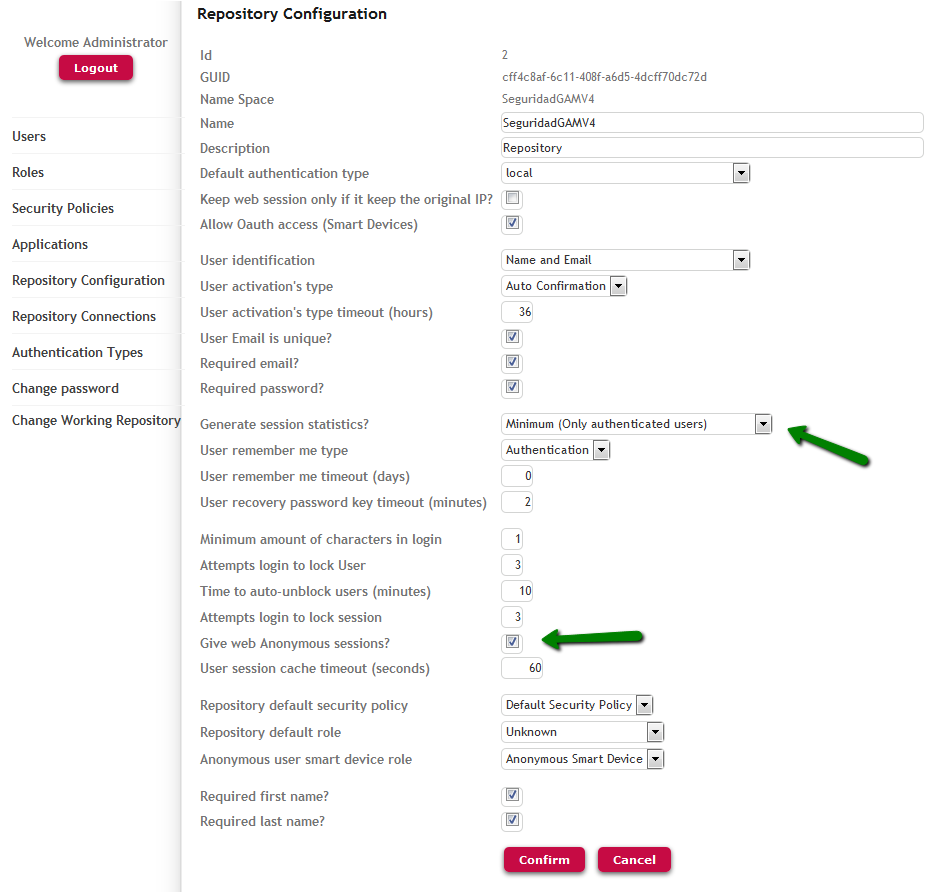

Applications that use GeneXus Access Manager can have private and public pages depending on the Integrated Security Level property. Public pages are those where the Integrated Security Level property is set to none.
In cases where applications have both private and public web pages, when a user visits the public pages, a Session can be kept anyway (optionally).
Although the user is not logged in to the application (because he has visited only public pages of the application), a Session can be saved with information that in most cases is useful for statistical purposes. From now on, this Session will be called an "anonymous session."
Anonymous Sessions are GAM Sessions that are given to users of the application who have not been authenticated.
As with any other Session, they are identified by a Token and have other properties such as Date, InitialURL, LastURL, etc.
The GAMRepositoryConfiguration web panel (located in the GAM Example folder) is an example where this property is used.
The way to use it in GeneXus code (by using the GAM API) is as follows:
&Repository.GiveAnonymousSession = &GiveAnonymousSession // GAMBoolean data type
An example is to record the user's browsing activity in a site until the user authenticates.
When the user logs in, the same Session is given to him (the same Token is used), so the backwards information that has been obtained is saved and added to the new Session information.
This is a typical case of portals, where "navigability" is the information needed to obtain statistics of visited pages.
See it in more detail:
In this example, an "anonymous session" stores the information of all public web pages visited by an anonymous user, until he/she logs in.
1. Edit the repository configuration (using the Backoffice GAM) and configure:
Give Anonymous Session = TRUE
Generate Session Statistics = Minimum (or Detail)

2. Program the following in any non-secure web object:
&SessionValid = GAMSession.IsValid(&Session, &Errors) //&SessionValid is Boolean, &Session is GAMSession data type If &SessionValid &sessionToken = &Session.Token &sessionInitialURL = &Session.InitialURL &sessionLastURL = &Session.LastURL //Obtain the current Web Page &sessionStatus = &Session.Status &sessionIsAnonymous = &Session.IsAnonymous //Ask if Session is Anonymous or not &sessionDate = &Session.Date else do 'DisplayMessages' Endif
- When &session.isvalid is executed, GAM returns a token of the session.
If the user is not logged in (or the session has expired), the session is identified as an anonymous session (IsAnonymous flag is set to True).
Note:
If a GAMSession.get() is executed immediately after the session has expired, it can give an error (GAM 21 Session finished, log in again.) because the new anonymous session has not been created yet; at the next GAMSession.get() the anonymous session is created and it will return the new session without errors.
GAM Repository features and properties